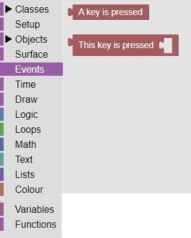

<h1>Keys Pressed Block</h1>
This 2 blocks (located in events) are used to determine if a key is pressed, and then which key is pressed<br>
<br>
This code will check if the "w" key is pressed: <br>
<br>
<hr>
<center></center>